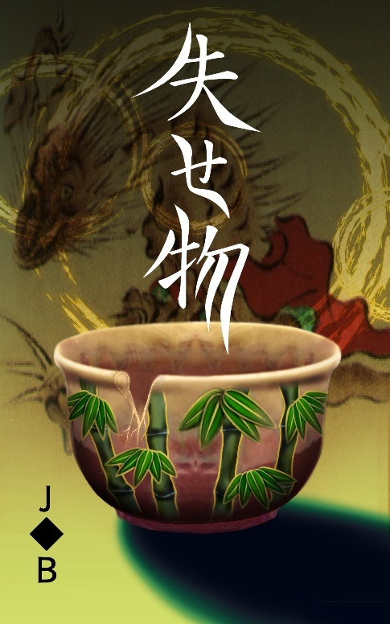
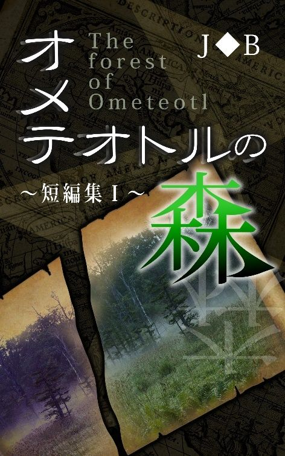

| ウズメの木 | |
| Ｊ◆Ｂ | |
| (2019) | |
目次
安永六年、巷で妖怪画集等が刊行されると、物の怪や不思議噺といった類のものが民衆の心を捉え始めていた。
それらに影響されてか、私は津々浦々から古くから伝わる伝承といった不思議噺を集める為に旅に出ていた。
とはいっても私が書いたものは然程評判にもならなかったが、それでも私の趣味の一環でもある旅をしながら各地を回り、様々な不思議噺を聞けるのは私の好奇心を満たすのに十分だった。
これまで耳にしてきた、いくつもの不思議噺。
その中で、今でも心に残っているのは「ウズメの木」と呼ばれる一本の巨木に纏わる噺だった。
最初こそ、よくある不思議な噺の一つとして、それ以上でもそれ以下でもなかったその噺は、後に私の脳裏から離れられない唯一の伝承となってしまうことを当時の私は知る由もなかった。
旅の途中で、私はある小さな村へと辿り着いた。
そこは目の前に美しい海が広がり、三方を山で囲まれた、まさに俗世から隔絶されたような風景だった。
その小さな村には二十軒程の家屋があり、村人達は狩りや漁に精を出している者や、畑や田を耕す者等、皆が忙しそうに汗を流していた。
村の中で元気で走り回る子供達の他に噺を聞けそうな村人を探していると、砂浜で一人ただぼんやりと海を眺めている一人の若者がいた。
私が声を掛けると、その若者は茂吉と名乗った。
「茂吉さんは、他の人達のように働かないのですか？」
「いやぁ、俺が働いたら天と地が逆さまになってしまうよ」
そう笑い飛ばした茂吉は、どうやら身を粉にして働くのが嫌いのようだったが、私にとって茂吉が働き者かどうかは然程問題でもなかった。
他の村人達が皆忙しそうにしている中で暇を持て余していた茂吉に、この村に伝わる不思議噺がないかと訊くと、茂吉は天を仰ぐように考えてから、つい最近起きた出来事を話し始めた。
◆
この小さな村を牛耳っている長の家系は、不思議と昔から女の子しか生まれず、生まれた子供が成人すると、婿をとってはその婿が長として代々この村を治めていた。
その長の家には代々伝わる手鏡があり、それは母から娘へ、そして成長したその娘に女の子が生まれると、手鏡はその子へと引き継がれていく。
現在、その手鏡は母から娘のキヌへと引き継がれていたが、手鏡をキヌへ託した母親は、その後まもなくして病死でこの世を去った。
母の形見となってしまった手鏡をキヌは後生大事に使っていたが、ある日、鏡の一部が欠けているのに気付いた。
それでもキヌは、母から託された先祖代々伝わるその手鏡を使い続けていた。
鏡が欠けているのを知った長は、欠けた鏡は縁起が悪いとして、その手鏡を処分するようキヌへ言い付けた。
長の言うことには村の者は誰一人意見するのも叶わず、それは娘であるキヌも同じで、キヌは父でもある長の言い付けを守るより他なかった。
母の形見でもある手鏡をキヌは大事そうに抱えて一人、山へと入っていった。
この村では欠けたり割れてしまった鏡を木の根元に埋める風習があり、キヌもそれにならって手鏡を埋めるに相応しい木を探しながら、ひたすら山の中を歩き続けた。
山の奥深くにまでやってきた時、キヌは一本の巨木の元へ辿り着いた。
それは太い幹が見事なまでに二股に分かれ、いくつもの長く伸びた枝先の葉の隙間から光が差し込み、それがより一層、巨木を神々しく見せていた。
まさに神の木のごとくキヌの目に映るその巨木に、キヌは手鏡を埋めるに相応しいのはこの木しかないと、そこへ手鏡を埋めることにした。
傍に落ちていた枝を拾って小さな穴を掘り、手鏡を置いて土をかぶせ終えると、キヌはそのかぶせた土の上に両手を乗せた。
この神々しい巨木の元で母の形見だった手鏡は、これから長い眠りに就く。
柔らかな土の感触から母の温もりのような温かさが手の平に伝わってくると、キヌは母から受け継いだ手鏡を失う代わりに、そこから母の想いが全身に流れてきたような気がした。
それから数日経ったある日、村にやって来た行商人が珍しい品々を広げていくと、村人達に混じってキヌもまたその目を輝かせていた。
並べられた品々を隅からじっくりと眺めていたキヌは、ある一つの品に目を見張った。
それは亡き母の形見で、数日前に山へ埋めてきた手鏡と瓜二つの手鏡だった。
その手鏡を手に取ったキヌは、何度もひっくり返しては隅々にまで目を配った。
「これをどこで？」
キヌが尋ねると、行商人はどこで仕入れたのか忘れてしまったようで出所は不明だった。
珍しくキヌにせがまれた父もまた、あの手鏡と見事に瓜二つの代物に、それをキヌに買って与えた。
再びその手鏡をこの手にできるとは思ってもみなかったキヌは、それがまた自分の所へ戻ってきてくれたのが何より嬉しく、その奇跡ともいえる出来事を仲の良い村の娘に話した。
それを聞いた娘が物は試しと、縁が欠けてしまった手鏡をキヌから教えてもらった巨木の元へ埋めてくると、その数日後には埋めたはずの手鏡が娘の元へ戻ってきた。
その話は瞬く間に村に広がり、他の者達も欠けたり割れてしまった鏡を巨木の元へ埋めてくると、決まってその数日後には元の持ち主の元へ戻ってくるのだった。
キヌの手鏡は行商人によって舞い戻ってきたが、ある者は漁の網に引っ掛かって、ある者は獲ってきた熊の腹の中から、またある者は狩りに出掛けた先で獣の巣穴から鏡を見付け、それぞれ鏡が戻ってくる方法は実に様々だった。
不思議と埋めたはずの鏡と同じものが戻ってくるということが続く内に、いつしか名も無かったその山は「帰鏡山」と呼ばれ、幹が二股に分かれた巨木は「ウズメの木」と呼ばれるようになった。
しかし、主の元へ戻ってきた鏡には、いずれも一つだけ元の鏡と違うところがあった。
キヌの手鏡は、その裏側に小さな花の模様があしらわれていたが、その内の一つだけ花びらが一枚少ないものがあった。
他の者もそうだった。
鏡の裏面に施されていた格子柄等の模様の一部が何故か消えていた。
それはたとえ模様の無い無地だったとしても同じで、一部の色だけが消えているのだった。
その消えた部分について村人達は、ウズメの木が鏡を元に戻した駄賃として受け取ったのだろうと口にしていた。
◆
茂吉から聞かされたその不思議な噺に、なんとしてもそのウズメの木と呼ばれる巨木をこの目で見てみたいという私の願いに、案内役を買って出てくれた茂吉の後に続いて私は帰鏡山へと向かった。
その道中、私は茂吉が話してくれた内容が、やけに細部にまで渡って詳しかったのと、まるでその目で見てきたような口ぶりに、そのことをさり気無く茂吉に尋ねた。
すると茂吉は働くというのが嫌いな反面、記憶力だけはいい方で、誰かが話していた内容は一語一句の全てを覚えているのだと言った。
茂吉は、キヌや他の村人達が話していた内容の全てを覚え、こうして今でもなお記憶に残っているようだった。
ただ、私達が山へ向かおうと村の中を歩いている時、村人達が茂吉に向けていた目が、どこか蔑みを含んでいるかのように見えていた。
余所者である私が蔑まれるならまだ分かる。
村人達が見ていたのは私ではなく、隣にいる茂吉だった。
おそらくロクに働きもせず、いつも暇を持て余している茂吉を村人達は快く思っていないのだろう。
村人達はともかく、茂吉の家族はいったいどうなのだろうか？
父親なり母親なり、誰も茂吉に働けと物言う者はいないのだろうか？
「茂吉さん、ご家族は？」
「ああ、いるよ。父さんと母さん、それと妹」
四人家族の茂吉だったが、父からはいつも真面目に働けと罵られ、とうに呆れている母は茂吉の顔を見る度に溜め息を付き、妹に至ってはここしばらく口も利いてくれないようだった。
かくいう私も稼業も継がずに、こうして自由気ままに旅をしている身としては、茂吉へ苦言を呈することもできないばかりか、余所者の私が口を挟むまでもなかった。
茂吉とて働くのが嫌いという欠点はあれ、こうして話をしてみると根はいい人のようにも思えた。
どれだけ歩いただろうか、私達は既に山の中腹辺りに差し掛かっていた。
「茂吉さん、あとどれくらい......」
「ほら、もうそこに見えてるよ」
茂吉が指差したその先へ目を向けると、そこには静かにそびえる一本の巨木があった。
話に聞いていた通り、立派な太い幹は私の腰の辺りで見事に二股に分かれ、それぞれが辺りを覆いつくす程にその枝を広げていた。
ただでさえ見事なその巨木は、枝先に鬱蒼と生い茂っている葉の隙間から差し込んでいる木漏れ日によって、更に神々しさを増し、私はただただ圧倒されていた。
まるで辺り一帯が何かしらの妖気に包まれているような錯覚に陥っていた私に、茂吉は満足気な顔をしていた。
「いや、思っていた以上に見事な木ですね」
思わずそう口にした私は目の前にたたずむ巨木に、これは不思議噺の一つや二つはありそうだと納得せざるを得なかった。
「実は、まだ誰にも言ってないことがあるんだ」
茂吉はそう言うと、村の誰にも話していないある秘密を話し始めた。
埋めた鏡が戻ってくるという話を聞いた茂吉は、最初こそ信じてはいなかったが、次から次へと同じ話を耳にする内に、鏡以外の物をここへ埋めたらどうなるのだろうかと考え、ヒビが入ってしまった湯飲みをこの場所へ埋めた。
その数日後、いつものように砂浜でただボンヤリと海を眺めていた茂吉は、波打ち際で寄せる波が少しずつ削っていく砂浜に何か白い物があるのに気付いた。
何かと思いそこへ近付くと、それは茂吉がこの巨木の元に埋めた湯飲みだった。
それを手に取って隅々までじっくりと目を凝らすと、確かに村人達が話していた通り、茂吉の湯飲みに施されていた模様の一部が消えていた。
一見してそうとは気付かない程の違い。
それを目の当たりにした茂吉は、この巨木に纏わる噺が真実だったと考えを改めたようだった。
「鏡だけじゃなく、湯飲みまでもが......」
「な？ 面白いだろう？」
茂吉は自分しか知らない出来事を打ち明けると、まるで子供が自慢げにするような笑みを私へ向けた。
ただでさえ巨木の持つ妖力に圧倒されていた私は、なおも尊敬の眼差しを目の前の巨木へ向けた。
そして、私も何か試してみたいという衝動に駆られたが、手持ちの金が残り僅かだったのもあり、この村を最後に一度故郷へ帰ろうとしていた為、埋めた物が戻ってくるまでの間、この村へ滞在するのは今の私には難しかった。
そんなことを考えていた私の隣で、茂吉はボソリと呟いた。
「死んだ人とか埋めたらどうなるんだろうな？」
「えっ？ いや、さすがにそれは......」
そう言いつつも私は、茂吉が呟いた言葉の先にある答えを知りたいとさえ思ってしまった。
「そんなことをしたら、バチが当たりそうじゃないですか？」
私はふと脳裏を過ぎってしまった考えを払拭するように、隣の茂吉へ目を向けた。
「しない、しないって。そんな恐ろしいこと」
そう言って笑い飛ばした茂吉もただ単に、ふと疑問に思ってしまったことを口に出してしまっただけで、本気でそれを試そうとは思ってもいないようだった。
私は取り出した筆で、目の前にたたずむ神々しいまでの巨木を絵として書き写した。
絵を描くのはそれほど得意ではなかったが、私は今、目の前にそびえるこの神々しいまでの巨木をこの目に焼き付けるとともに、この情景を拙かったとしても絵にして残しておきたかった。
御世辞にも上手いとは言えないが、ウズメの木を書き写し終えると私達は山を下りた。
村に辿り着くと、遠くでこちらに大きく手を振っている女性がいた。
その女性は、長の娘のキヌだった。
村人達はおろか、家族からも嫌われていた茂吉が、この村で唯一の話し相手となっていたのがキヌのようだったが、それも長は快く思っていないらしい。
私は最初に奇跡を目の当たりにしたというキヌに噺を聞くことができた。
しかし、その内容は茂吉から聞かされた内容と寸分違わず、私は茂吉の記憶力の良さに感心させられた。
キヌから教えられ、他にも鏡が戻ってきたという村の娘達に噺を聞いている内に、この不思議噺はより一層信憑性を増していった。
娘達からその手鏡を見せてもらうと、次に茂吉が大事に取っておいた湯飲みも見せてもらった。
実際にそれらを手にし、模様の一部が消えているのをこの目にすると、私の興奮は最高潮を迎えた。
故郷へ辿り着いた私は、各地を歩き回った今回の旅で聞くことができた不思議噺を書き上げ、一冊の書物として刊行した。
巷では物の怪といった類の絵が描かれているものが特に人気で、私のようにその殆どが文字で連なっているものは、それ程の人気を得ることは叶わなかったが、それでも何冊かは誰かが手に取っていってくれたようだった。
私がこの足で集めてきた各地の不思議噺が、こうして一人でも多く誰かの元へ届いてくれたと思うと、実に感慨深いものがある。
私はこれからも不思議噺を集める為、旅に出続けようと思う。
あれからも私はいまだ方々を歩き回り、各地に纏わる不思議噺を集めていた。
その旅からの帰り道、以前に赴いた帰鏡山が見えてくると、その山の向こうにある小さな村に住む茂吉の顔がふと頭を過ぎった。
今でも働かずに、ただ暇を持て余した日常を過ごしているのだろうか？
悪く言えばぐうたらではあるが、どこか憎めない、そんな印象を私は茂吉に抱いていた。
帰鏡山の傍を通り掛かったのも何かの縁とばかりに、私はその村へ立ち寄ることにした。
あれから二年もの月日が流れ、突然現れた私との再会に茂吉は驚くだろうか？
山を越え、その村に辿り着いた時に感じたのは違和感だった。
かつては小さな村とはいえ、村人達は仕事に精を出し、子供達が駆けまわる、そんな活気に満ち溢れていたその村は、ひどく閑散としていた。
点在していた家屋は朽ち果て、キヌという娘と村の長が住んでいた立派な家屋も今ではただの廃屋と化し、村には人の気配がまるで無かった。
茂吉と最初に出会った砂浜にもその姿は無く、私は茂吉の家へと急いだ。
海からの潮風で痛みが激しい一軒家の戸を開けると、私の目に飛び込んできたのは黒い染みのある床の上で、布団に横たわる茂吉の姿だった。
「茂吉さん！」
すかさずそこへ駆け寄ると、茂吉は単に眠っていたようで、まだ眠そうな目を擦りながら上半身を起こした。
「あれ？ あの時の......」
「ああ、よかった。死んでいるのかと思いましたよ、茂吉さん！」
茂吉が生きていてくれたことに、私は胸を撫で下ろした。
「どうしたんですか、こんな昼間から？ どこか身体の具合でも？」
私の心配もよそに、茂吉はどこか焦点の合わない視線を泳がせていた。
「あぁ、いや、最近中々眠れないことが多くて、こうして眠れる時に横になるようにしていたんだ」
あれだけ自由気ままに暮らし、何一つ悩みも無さそうだった茂吉が夜も眠れなくなるとは、いったい何があったのか？
この閑散としている村と何か関係があるのかと、私は言い知れぬ胸騒ぎに襲われた。
「茂吉さん、村の人達はどうしたんですか？ 一人も姿が見当たりませんが」
その問いに、茂吉はまだ寝惚けた様子ではあったが、その顔を曇らせた。
「みんな、死んだよ」
私は耳を疑った。
茂吉は今、村人達は全員死んだと言ったのだろうか？
「......死んだ？ 流行り病ですか？ 茂吉さんは大丈夫なんですか？」
寝起き間もない茂吉に、私は次から次へと質問を浴びせた。
「いや、病気......じゃないんだ。話せば長くなる」
私は茂吉の目がしっかりと覚めるのを待つ間、以前とは打って変わってひどく痩せこけた茂吉の顔を見つめていた。
「お茶でもあればいいんだけど、何にもなくてね」
「いいえ、どうかお構いなく」
ようやく布団から起き上がることができた茂吉は、私をもてなそうとしてくれたが、どうやらこの家には口にできる物は何もないようだった。
「何から話そうか......」
ついさっきまで眠っていた布団を畳むことなく、その上にあぐらをかいた茂吉はぼろきれのような着流しで、大きくはだけた胸元からは肉付きの無い皮膚の下に骨までもが見えていた。
以前この村へやって来た時も質素な暮らしではあったが、ここまでひどい有り様ではなかった。
「茂吉さん、ちゃんと食べていますか？ よかったらこれ......」
私はここへ来る前に立ち寄った村で手に入れていた握り飯を渡すと、茂吉は黙ったまま受け取った握り飯をしばらく見つめていた。
「米を見るのは、いつぶりかな」
茂吉は白米をゆっくりと味わうように、一口一口を噛み締めていた。
山から下りてくる途中に見えていた田畑は、以前はあれ程綺麗な色を染めていたにもかかわらず、今ではすっかりと雑草で覆いつくされ、この二年で米も野菜も作られてはいないようだった。
「以前、私がこの村へ来た後に、いったい何があったのですか？」
茂吉は最後の一欠けらを口に頬張り、それを飲み込んで一呼吸置くと静かに語り始めた。
◆
最初の異変は重松の妻・フクだった。
病に伏せていたフクは長い間ずっと寝たきりで、妻想いの重松は働きながらフクの世話をしていた。
そんな寝たきりだったフクがある日突然、病に伏す前のように村の中を元気に歩き回っている姿に村人達は驚いた。
フクと重松は、長い間の看病のおかげでようやく病から解放されたと喜び、村の者達もずっと心配していたフクの病気が治ったのを素直に喜んでいた。
それから少しすると、村から重松の姿が消えた。
フクへ訊いても重松の居場所は分からず、忽然と姿を消した重松に村中は騒然となった。
重松は畑で作物を作るのを仕事としていた為、漁に出掛けて海に落ちたり、猟で入った山の中で熊に襲われる等とは到底考えられなかった。
皆が心配する中、重松が姿を消してから七日が経とうとしていた時、山から下りてくる重松の姿があった。
今までいったいどこにいたのかと尋ねる村人に、重松はただ茫然と遠くを見つめるだけで答えようとはしなかったが、肩を揺さぶって何度も問い詰める村人に重松はようやく気が付いたようで、山で山菜を取っていたと答えた。
山菜を取っていたと言う割に重松は山菜の一つも手にしていないだけでなく、七日間もの間、山に籠っていたにしてはやつれたりもしていなかった。
重松の言動に違和感を覚えたものの、こうして無事に村へ戻ってきてくれたことに村人達は心から安心した。
次に異変があったのは、重松が最も仲を良くしていた男・平蔵だった。
平蔵もまた重松のように忽然と姿を消すと、その七日後にひょっこりと姿を現した。
誰が訊いても平蔵はどこで何をしていたのか思い出せないようで、村人達は重松に続いて平蔵にも心配の目を向けたが、当の重松と平蔵は以前と変わらずよく働き、村の者と普通に言葉も交わし、失踪したことを除くと何一つ変わった点はなかった。
ただ、不思議な出来事はそれだけでは収まらなかった。
今度は平蔵の妻、子供、父親、母親と、平蔵の家族が一人ずつ順番に消えては七日目を迎える頃に戻ってくるということが続き、やがてその奇怪な出来事は他の家にも飛び火した。
こうして村の誰かが行方をくらまし、再びその姿を見せるということが続く内に、村では神隠しにあったのではないかと噂されるようになっていった。
そんな不思議な出来事が立て続けに起こるようになると、俺は村人達の言動に注意を払うだけでなく、ある疑問が頭を過ぎった。
最初に異変を感じたフク、次はその夫の重松、そして重松の友人の平蔵、次は......。
フクを除けば、いずれも姿を消した者と極近しい者が次に姿を消していることに気付いた。
何故、そうなのか？
一度姿を消した村人を注意深く観察していると、そのいずれにも極小さな共通点が一つだけあった。
それは、小指の爪が無いことだった。
重松も平蔵も......思いの外、フクさえも片手の小指の爪が無かった。
爪がそっくり剥がれているにもかかわらず、その指先は特に出血しているようにも見えなかった。
病に伏していたはずのフクにしてもそうだ。
寝たきりでその病の重さに長くは無いと村人達が囁いていたはずが、何事もなかったかのように突然、元気な姿で現れた。
この奇怪な現象の始まりは......フクなのかもしれない。
他の村人達も気にはなるが、その中でもフクの言動に深く注意を払っていると、フクが夫である重松ではなく、その友人の平蔵と二人で何やらコソコソと話をしているのを俺は立ち聞きした。
会話はよく聞こえなかったが、二人が小声で話している中、平蔵がフクのことを「
山を越えた隣村からこの村へ嫁いできたフクは、平蔵とは血も繋がらない赤の他人だった。
それなのに何故、平蔵がフクのことを「姉さん」と呼んだのかは、まるで分からなかった。
その後も、誰かが姿を消すと、決まって七日後に何食わぬ顔で戻り、そのまた七日後には誰かが姿を消していた。
そんなことを繰り返していたこの村で、最後に姿を消して再びその姿を見せた菊次の行動を俺は見張ることにした。
とはいっても、昼間の菊次は普段と変わらず漁で他の者と海へ出るのが多く、何かが起こるとしたら菊次が戻ってきた七日目だと考えると、その日の日が沈んで暗くなった頃、草むらの陰から菊次の家を見張った。
次第に眠気が襲ってくるのを必死に我慢しながら菊次の家を見張っていると、異変はすぐに訪れた。
明かりの消えた菊次の家の戸が静かに開くと、そこから菊次が出てきた。
ただ、姿を見せたのは菊次だけではなかった。
菊次は誰かを背負っているようだったが、その背にいたのは菊次の妻・カヨで、そのカヨは意識が無いように見えた。
菊次はいったいカヨをどうしようというのだろうか？
あれほど頻繁に襲い掛かっていた眠気はどこかへ吹き飛び、目を見張るように菊次の行動を監視し続けた。
カヨを背にした菊次は持ちづらそうに
菊次が辿り着いたのは、帰鏡山にそびえるウズメの木だった。
そこで菊次はカヨを地面へ乱雑に落としたが、当のカヨは起きる気配がまったく無いどころか、菊次は鍬でウズメの木の前に穴を掘り始めた。
まさか、そこにカヨを埋めようとしているのか？
いや、そもそもカヨは死んでいるのか？
ピクリとも動かないカヨに胸の鼓動が激しくなる中、菊次の一挙一動に俺は瞬きするのも忘れていた。
案の定、人一人が入れる程の穴を掘った菊次は、そこへカヨを投げ入れて元通りに土をかぶせ、しばらくウズメの木を見つめるとそのまま山を下りていった。
草むらの陰で一人残っていた俺は、その目で見た現実に戸惑いを隠せずにいると、震える足でその場から一歩も動けずにいた。
菊次がカヨを殺して埋めた。
それ以外、見たままの事実を曲げる要素はどこにもなかった。
明日から村で菊次と顔を合わせた時のことを考えると、俺はどうすればいいか分からなかった。
妻を殺した男とどう接すれば......。
いや、このことは村の長に言うべきではないだろうか？
この小さな村で何か犯罪めいたこと等、これまでただの一度も無かった。
長に菊次がカヨを殺して埋めたと言っても、信じてもらえるだろうか？
証拠ならそこにある。
埋められたカヨの死体が、何よりの証拠だ。
そうだ、それ以外にこの事態を治める方法は無い。
明日の朝早くに、長の元へ行こう。
その場から立ち去ろうとした時、誰もいないはずのウズメの木の辺りから何やら音が聞こえてきた。
ボコッ......ボコボコッ......。
土をえぐるような音に振り返ると、ウズメの木の周りの地面が小さく隆起していた。
何事かと息を潜めていると、その隆起した地面から一本の木の根が地上へと這い出てきた。
「............っ！」
思わず声が出そうになるのを両手で口を塞ぎ、俺は必死に耐えた。
暗がりの中とはいえ、随分と長く外にいたせいですっかりと夜目にも慣れたその光景に、俺は自身の目をも疑った。
突如、地面から現れた一本の木の根は、菊次が埋めた場所を丁寧に撫でると、その先端を地面へ突き刺した。
目の前で木の根が勝手に動いているのを目の当たりにすると、これまで尊敬の念まで抱いていたウズメの木は、一転して恐怖以外の何物でもないことにガクガクと震える膝を無理矢理動かした。
一歩、また一歩と静かに後退りをすると、恐怖で背中が凍り付きながら木々の間を一気に駆け抜けた。
あれは神が宿る木なんかではない。
あの木は化け物だ。
頭の中を満たすその恐怖と山を一気に駆け下りてきたせいで、息も切れ切れだった。
結局、一睡もできないまま朝を迎えた俺は、長の元へと向かった。
「すいません、長に大事な話が！」
慌ただしく長の家の戸を開けるなり大声を張り上げると、ムスリとあからさまに不機嫌そうな長が家の中から出てきたが、それに構うことなく夕べ見た出来事の全てを長へ話した。
案の定、その話を鵜呑みにする長ではなかったが、証拠があると言って説得し、長は鍬を手にした俺とともにウズメの木の元へ向かった。
「こ、ここにカヨの死体があるんだ！」
俺は菊次がカヨを埋めた場所を掘り返したが、どこまで掘ってもカヨの姿は現れなかった。
「そんな......そんなハズ......昨日、見たんだ！ ここで菊次がカヨを埋めているのを！」
その叫びも虚しく、カヨの死体が出てこないのでは長も呆れるより他なかった。
「茂吉、いいか？ このことは黙っておいてやる。だが、もう二度とそんなでまかせを口にするな！」
長は蔑むように俺を睨み付けると、こんなことをしている暇があるのならしっかり働けと言い残し、一人先に山を下りていった。
「そんな......」
俺は泳ぐ視線の先をウズメの木へ向けた。
昨晩、ここで見たことが夢でないのは自分が一番よく分かっていた。
あれからただの一睡もしていない今、まだハッキリと菊次がカヨをここへ埋めていた様子が瞼に焼き付いて離れないのだから。
そして、この木の根が地面から現れ......？
俺は、ウズメの木と呼ばれるこの巨木が欠けた鏡を元に直し、持ち主の元へ戻していたのを思い出した。
人が一人消えては現れるという奇怪な現象が続いている中、最近では鏡を埋めたという話を一切耳にすることもなく、すっかりとそれを忘れていたのだった。
鏡や湯飲みを直して持ち主の元へ返していたこの巨木は、たとえ死人だとしてもそれを元通りに直していたというのか？
だとすると昨日、確かに菊次がここに埋めたはずのカヨの死体はどこに？
俺は畏れるように巨木を見上げた。
カヨが姿を消してから七日目の朝を迎えると、俺はウズメの木の元へ向かった。
それは姿を消した者達の殆どが、この帰鏡山から下りて来るのを目撃されていたからだった。
皆がこの山から下りて来るのなら、おそらくこの近くに現れる可能性があり、カヨもまたきっとここに現れるかもしれない。
そう考えた俺は、いつ現れるかも分からないカヨを木の陰に身を潜めながら待ち続けた。
しばらくすると、そこから少し離れているウズメの木の方からサワサワと葉擦れの音が聞こえ始めた。
しかし、木の葉を揺らすような風は今、吹いてなどいない。
音がする方へ目を向けると、ウズメの木の枝先が風もないのにユラユラと揺れていた。
いったい何が起きているのかと目を見張っていると、揺れていた巨木の枝は次第にその激しさを増し、いつしか太く立派な幹までもが見悶えているかのように揺れ動き始めた。
二股に分かれていた幹は、その幹をくねらせるようにして互いに幹を擦り付けたり、捩じれるように交わったりしていた。
あの木はいったい何をしようとしているのか？
これから何が起きるというのか？
固唾を呑みながら、俺は木の陰からその様子を窺った。
やがて激しく揺れていた二股の幹は少しずつ落ち着きを取り戻していったかに見えたが、次の瞬間、その枝先が小刻みに揺れ始めると木の葉が一斉に騒めき出した。
すると、二股になっている左右の幹が交わる境い目から樹液のような汁が流れ出し、そこから透明な膜で包まれた何かが現れた。
幹から押し出されるようにして現れたそれは、地面の上へドサリと音を立てて落ちた。
ねっとりとした樹液とともに、それを包んでいたものはまるで羊膜のようで、その中では大きな何かが蠢いていた。
透明な膜で包まれていたものは、まるで膝を抱えるように背を丸めている人のようにも見え、やがてそれは膜を突き破ってその正体を現した。
ずぶ濡れの全身はヌメリを帯びた樹液のせいか、その姿は僅かに差し込んでいる光で輝いているようにも見えた。
それは紛れもなく、最後に見た時と同じ着流しを着ているカヨだった。
カヨは身体に絡まる膜を取り払うと、弱々しくも立ち上がってウズメの木を見上げた。
「............さん」
何か言葉を発したようだったが、よくは聞き取れなかった。
カヨがウズメの木へ何かを語り掛けると、それに呼応するように地面から一本の木の根が現れた。
その根はカヨの足元から全身を伝うように上っていくと、根の先でカヨの頬を撫でているように見えた。
それから少しして、その根が地面の中へ静かに戻っていくと、カヨはくるりと巨木に背を向け、生まれたての小鹿のようにたどたどしい足取りで、こちらへ向かって歩み出した。
カヨから隠れるように木の陰に身を潜めると、俺の存在に気付かずに通り過ぎていったカヨの後ろ姿を俺は見送った。
あれ程おぼつかなかった足元は、今では普通の人と変わらない足取りになっていた。
カヨの姿が見えなくなると、俺は木の陰から飛び出した。
いつの間にかそこにあったはずの透明な膜はどこにも無く、二股に分かれている幹の境い目はカヨが出てきたにもかかわらず、穴らしきものもどこにも開いてはいなかった。
人を一人生み出した巨木はいつものように、ただそこにそびえているだけだったが、俺の目には何か物の怪でも宿った恐ろしい木にしか見えなかった。
カヨに覚られないよう、急いでカヨの後を追い掛けると、ようやくその姿が見える距離にまで追い付いた。
しかし、そこから見えるカヨの全身はどこも濡れて等いなく、いつの間にか着流しはすっかりと乾いているように見えた。
山から下りたカヨを村人達は温かく受け入れ、当のカヨも以前と何ら変わらない様子で村の者と話をしていた。
遠くからそれを眺めていると、以前と変わらないはずのカヨに何か違和感を覚えた。
カヨの歩き方、その話し方、ちょっとした癖、その姿はまるでカヨそのもので、いったいどこが違うのかと訊かれたら、その答えは容易に出ない程の小さな違和感。
俺の目にはカヨの何かが違うように映っていただけでなく、それはフクや重松、平蔵等、一度姿を消した者全員に言えるものだった。
俺は誰かが話した言葉を全て覚えているだけではなく、ちょっとした表情からその者が相手をどう見ているかが手に取るように分かる。
それは、日頃から家族や村人達から蔑まされていた俺が、その顔色から何を言わんとしているのか、自然と身に付いてしまったものだった。
死んだ者があの巨木の元で生まれ変わる......いや、生まれ変わった者は最早、元の姿形をしているが、その実は全くの別物だと俺は考えた。
そもそも死んだ人が生まれ変わるなんて、実際にこの目で見たとしても、到底信じられるようなことではない。
ましてや木から人が生まれ出てくるなんて......。
あの巨木はこの世に仇をなす恐ろしい存在だ！
この村は既にその脅威に襲われているが、このままにしていてはもっと大変なことになってしまう。
そう考えると、日が沈むと同時に俺はウズメの木の元へ向かった。
目の前の巨木を睨み付け、俺は手にしていた斧を振り上げた。
しかし、振り上げた斧を持つ手は何故か震え、その手に力を込めれば込める程、巨木を睨み付ければ睨み付ける程、斧を振り下ろすことができなかった。
目には見えないが、この巨木から何か恐ろしげなものが湧き出ている感覚に襲われていたからだった。
それは恐怖か？
畏怖か？
風も吹いていない中、そんな俺をまるであざ笑うかのように木の葉がざわめきだすと、まだ外は昼間の熱気が冷めていないのに、身体は凍えるような寒さで震え、俺は思わずその場から逃げ出してしまった。
アレは、人がどうこうできる代物ではない。
できるものなら、もう二度とあの巨木に関わりたくない。
そんな思いとともに、俺は一目散に山を駆け下りた。
カヨが村に戻ってから七日目、次に姿を消したのは長だった。
この頃になると村では誰かが姿を消したとしても、それはただの神隠しで七日もすれば無事に戻ってくると、驚く者は誰もいなくなっていた。
しかし、いくら七日で無事に戻ってくることが分かっていたとしても、娘のキヌは父がいなくなったのをひどく嘆いていた。
普段からキヌにも厳しい躾を強いていた長ではあったが、時には父親らしい面もあったとキヌは言っていた。
そんなキヌに、俺はこの村に起きていることと俺が考えていることの全てを話した。
「......そんなの嘘！ お父さんがお父さんじゃなくなるって......そんなのある訳ないじゃない！」
「本当なんだ！ フクも重松も菊次もカヨも皆、別人なんだよ。皆、あのウズメの木で別のモノに生まれ変わってるんだ！」
俺がいくら言い聞かせようとしても、キヌは信じてはくれなかった。
「一度姿を消した奴らは皆、小指の爪が無い。キヌの手鏡と同じなんだ」
もしも、長が村へ戻ってきたら、次の犠牲者はキヌかもしれない。
そう思うと、キヌを失いたくない一心で、このままキヌを長の家に帰さずに二人で村から出ようとキヌへ言った。
「村から出るって......正気で言ってるの？ 私はいや、この村を離れたくない！」
キヌは頑なに拒むと、そもそも村を出てどこでどうやって暮らすのか？ 働くのが嫌いな俺がどうやってキヌを食わしていくのか？ と、逆に俺を問い詰め、そこまで考えが及んでいなかった俺は言葉を詰まらせた。
そんな俺の態度に業を煮やしたキヌは、冷たい言葉を放った。
「いつかは私の為に真面目に働いてくれると思っていたのに......。私、帰る」
その瞳の奥に隠された秘めた想いを感じ取ると、俺はキヌの腕を強く掴んだ。
「帰ったらダメだ！ せめてしばらくは俺の家で......」
そう言おうとした時、キヌは憂いを含んだ目でキッと俺を睨み付け、唐突に叫び声を上げた。
「人さらい！」
キヌの一声で辺りから冷たい視線が浴びせられると、何事かと砂浜にいた俺達の元へ村人達が集まってきた。
「キヌちゃん、大丈夫かい？」
「どうした？ 何があった？」
「茂吉、お前......キヌに何しようとした？」
蔑みと怒りの眼差しを一心に受けた俺は掴んでいた手を静かに離すと、キヌは涙を浮かべながらその場から走り去って行った。
「とうとうキヌにまで手を出そうとした」
「いつかはこうなるんじゃないかって言ってたのに」
「長がいれば......」
村人達の間で心無い言葉が飛び交う中、俺は無言を貫いてその場を後にした。
その出来事を知った父はいたく激怒し、長が戻ってきたら何と言い訳してよいものかと頭を悩ませていた。
それ以来、家族は元より村の中でも俺は益々孤立していき、村の中でキヌと顔を合わせようものなら、かつて抱いていた俺への想いを塗り替えたかのように、怒りの目で俺を無視するようになっていた。
長が村へ戻ってきたその七日後、キヌは姿を消した。
こうなるのが分かっていながらどうすることもできなかったと、俺は一人頭を抱えていた。
村へ戻ってきたキヌが俺に向ける眼差しには、かつて秘めていた想いの欠片すら宿ってはいなかった。
村人が姿を消し、戻ってきてはまた誰かが姿を消すといった出来事が点々と他の家族を襲っていくと、それは最後に俺の家族の元にやってきた。
最初にいなくなったのは父だった。
父が姿を消してから七日目、父は村に戻ってきた。
その父へこの間、どこで何をしていたのかと問い詰めたが、肝心の父の記憶はあやふやで、単に山籠もりをしていたとだけ口にしていた。
その父の小指の先を見ると、他の者と同じように爪は無かった。
以前とまったく変わらない様子の父だったが、その父を寝ずに俺は監視した。
次は母か、妹か......自分だ。
父は家族の誰かを深夜にひっそりと殺し、ウズメの木の元へ埋めるだろう。
家の中で家族が川の字に並んで寝静まっていた時、一番端の布団の中で俺は瞼を閉じることなく、一人起きていた。
すると、ムクリと誰かが布団を抜け出す気配を感じると、布団の中で隠し持っていた手斧を握る手に力を込めた。
起き上がったのは父だろう。
誰を殺そうとしている？
母か？
妹か？
......自分か？
父は一番向こう側で何かをしているようだったが、それは母が寝ている場所だった。
父が母を殺そうとしていると分かると、手斧を手に布団から抜け出そうとしたが、その時、何故だか身体が思うように動かなかった。
指一本すら動かせずにいた俺は、今まさに母が殺されそうになっているのに、それを助けることができずにいた。
微かな呻き声から、父は母の首を絞めているようだった。
隣に寝ていた妹はそれに気付きもせず、ぐっすりと眠りに就いている。
微かだった呻き声が次第に小さくなり、家の中がシンと静まり返ると、父は母を引きずってこの家から外へ出て行った。
それから少しして、ようやく身体の自由を取り戻したが、次の犠牲者が自分でなくてよかったと胸を撫で下ろすと同時に、母を助けられなかったのをひどく悔やんだ。
いくら血を分けた家族といっても、母もまた父と同じように俺を厄介者扱いしていた。
そんな母を救えなかったこと、いや、だから救おうとさえしなかったのかと、俺は自問自答した。
父が母を殺そうとした時に身体が動かなかったのは、心のどこかで自分以外が犠牲になればいいと願ったのか、はたまた自分が狙われなかったという安堵のせいか、それともあの巨木の妖気を思い出したからなのか、自分でもよく分からずにいた。
母が姿を消した後、次に犠牲となったのは妹だった。
この時も俺は、妹を助けられなかった。
いや、この村で最後に姿を消すのは自分しかいないのは分かっていた。
それほどに村中からも家族からでさえも、自分は忌み嫌われていたのだ。
いっそ、自分も他の奴らと同じ「人」でないモノになった方が、楽しく暮らせるのだろうか？
「人」であって「人」ではない何か。
そう考えれば考える程、底の知れぬ恐ろしさが湧き上がり、全身の震えが止まらなかった。
いつものように砂浜でただ海を眺めてボンヤリと過ごしていた日常と違い、この日は目の前に広がる海と潮の香りも感じず、ただそれだけを考えていた。
日が暮れて家に帰ろうとしたその時、戸を開ける前に家の中から話し声が聞こえてくると、戸に掛けた手を止め、俺は聞き耳を立てた。
家の中では父と母、そして妹の三人が何やら話をしているようだった。
「明日だね、
「うむ、きっと
「アンタ一人で大丈夫？ なんなら
最初に聞こえた声は妹だった。
それに答えたのが父で、次に口を開いたのは母の声だった。
妹と母は何故か父を「兄さん」と呼んでいた。
そして、父が口にした「母さん」とはいったい誰を指しているのか？
いや、「母さん」と呼ばれた者がどこの誰なのか、俺は分かったような気がしていた。
そして自分を除く家族全員が、自分を殺す算段を話し合っているという現実に、俺は一人苦笑いをするしかなかった。
既に「人」である者が誰一人としていなくなったこの村を捨て、このままどこかよそへ行こうかとも思ったが、これまでろくに働きもしてこなかったせいで、辿り着いた先で生活できるとは到底思えない。
かといって、このままただ黙って殺されるのを待つつもりもない。
俺はある決意を胸に、家の戸を開けた。
「ただいま」
◆
「そ、それでどうなったんですか？」
私は無意識の内に両手を床に押し付け、身を乗り出すように茂吉の話へ耳を傾けていた。
「その後、どうしたかって？」
茂吉は静かに目を閉じると、薄っすらとその顔に笑みを浮かべた。
「殺したさ」
耳を疑った私がポカンとしていると、茂吉は再び同じ言葉を口にした。
「妹を殺した後、父さんも母さんも......村の奴らも全員俺が殺してやったよ」
その言葉に、私はふと両手を付いていた床を見下ろした。
床のあちこちにある黒い染みのようなものは私の手のすぐ傍にもあり、私は思わずその手を床から離した。
「まさか......本当に？ 茂吉さんが......殺したのですか？」
私は恐る恐る床から視線を茂吉へ滑らせた。
「ああ。あの時の妹の顔は今でも忘れないよ」
茂吉はどこか遠くを見つめるような顔で、あの晩の出来事を語った。
妹に殺されると思った時、妹が茂吉に向けていた顔は、まるで蠅でも見るかのように冷たく蔑んだような目で、その瞬間、自分は殺される価値も無いのだと悟ったようだった。
それに加えてこの一連の出来事は全て、あのウズメの木が家族を増やそうとしていたに違いないと茂吉は言った。
皆が口にしていた「
そう考えると全ての辻褄が合ってくる。
これまで姿を消した村人の順番から考えると、その者から見て一番近しく、一番思いのある相手が次の犠牲者となっていた。
自分を想っていてくれたはずのキヌが自分を選ばなかったのは、既にその想いを断ち切ったからなのだろうと茂吉は思っていた。
蔑視しているかのような顔で自分を見下ろしている妹に、茂吉は布団の中で隠し持っていた手斧で、躊躇なくその首へ斬り付けた。
その後、布団で横になっていた父と母の首をはねると、外へ出て村中の家を片っ端から歩き渡り、村人達を一人残さず殺して回ったと言った。
「ど、どうしてそんなことを？」
とても殺人を犯すようには見えない茂吉を前にして、私の声は震えていた。
「え？ どうしてかって？ そりゃ、人間じゃないからな」
茂吉は静かに笑みを零すと、さも当然のごとく言ってのけた。
妹の首を斬り付けた時、妹の身体から樹液が飛び散るのかと思ったが、それは暗闇の中でもはっきりと分かる程に赤かったと、まるで他人事かのように茂吉は付け加えた。
「茂吉さん、......いくらなんでも家族までその手に掛けて、胸が痛みませんか？」
私の問いに、茂吉は驚いているようだった。
「あいつらは家族の皮を被った何かさ。家族でも何でもないよ」
その顔に後悔の念は微塵も無かった。
ただ、最初にいなくなった父、そして次にいなくなった母が自分を殺そうとしてくれるのを心のどこかで願っていたのかもしれないとボソリと呟いた。
それは両親が茂吉を殺そうとすること自体が、茂吉にとっては唯一の愛情を知る目安ともなったからだろう。
たとえ、それが人として許されない、歪んだ行為だったとしても......。
茂吉が家族を救えなかったのは、おそらく自分にその愛情が向けられなかったという悲しみや虚しさ、そして自身への憤りによるものだったのかもしれない。
茂吉の寂しそうな瞳が私にそう思わせる中、茂吉はなおもその後に自分のしたことを話してくれた。
村人達が二度と生き返らないように全員の首をはねて回った茂吉は、全員の死体を海へ流したようだった。
ただ、その中で家族を殺めた時より、キヌという娘を手に掛けた時が一番堪えたと言い、茂吉は表情を曇らせたが、次の瞬間にはその目をギラリと輝かせた。
「最後に一人だけ残った俺はどうしたと思う？」
村人達を一人残らず殺害し、その死体も全て処分した後、最後に残った者の思い等、私には到底考え付くはずもない。
「一度は死のうと思ったさ。俺一人がここで生きていけるわけもないだろうし......」
こうしてたった一人とはいえ、茂吉は現に生き延びている。
一度は自ら命を断とうとしたが、断ち切れずに今に至っているのだろうか？
私の考えが伝わったのか、茂吉がこの日まで生きながらえてきたのは、村の中に備蓄されていた作物や、畑で勝手に成長していた野菜等で食い繋ぎ、それらが底をつくと腹が減ったら都度、魚を獲ったり貝を拾ったり、そこら中に生えている雑草等を口にしていたと言った。
「こんな生活をしていると、時々ふと思うことがあるんだよね」
この荒んだ生活の中で茂吉は、自らウズメの木の元で命を断ったらどうなるのか、と考えることがあると言った。
最後の村人となってしまった茂吉が、ウズメの木の元で生まれ変わったとしたら、その生まれ変わった茂吉は......？
「なぁ、アンタ、俺が本物の人間か、そうでない者か、どっちか分かるかい？」
そう言って真っ直ぐ私を見据える茂吉の瞳に、私は何か恐ろしいものを感じた。
「な、何を言ってるんですか？ 茂吉さんは茂吉さんですよ！」
そうだ、目の前の茂吉はひどくやつれ、その生活も荒んではいるが、以前の茂吉と何ら変わらない、あの頃の茂吉のままだ。
いや、いくら人を殺めたといっても、そうであって欲しいと心の底から願いつつ、私は茂吉の小指の爪を確認しようと視線を落とすと、茂吉はあぐらをかいた足の上で両手を組んでいた。
茂吉の小指の先が見えないだけでなく、それを確かめようとしている私に気付いた茂吉は、その手を決して見せようともせず、その顔に薄ら笑いさえ浮かべていた。
そんな茂吉の様子に、万が一にも茂吉が人ならざる者だとしたらと思うと、私の膝は小さく震え出した。
「すみません、先を急ぎますので私はこれで失礼します」
逃げるように茂吉の家を出てきたのは、心のどこかで危険を知らせる小さな音が鳴り止まなかったせいかもしれない。
そもそも茂吉が語った内容が全て事実とは限らず、村人達は単に流行り病で亡くなったのかもしれないと自分にそう言い聞かせようとした時、砂浜に転がる何かに私は目を奪われた。
それは白く丸みを帯びた、しゃれこうべだった。
波が寄せる度に、コロコロと転がっているいくつものしゃれこうべに、私は言葉を失った。
急いで故郷へ戻った私は、あのウズメの木に纏わる言い伝えの本心が見えてなかったことに、不思議噺として記述したウズメの木の言い伝えについて、これを世に広めてはならないと考えた。
もしも、あれを目にした誰かが、あのウズメの木と呼ばれる巨木の元に死体を埋めようものなら、恐ろしいことが起こってしまう。
そして、それはきっと誰にも止められないだろう。
私の父が材木商を営んでいたおかげで、その父の顔を立てるように店主が渋々店先に置いていた私の著書・不思議噺ではあったが、幸いにもそれは然程人気にもなっていなかった。
既に世に出回ってしまった分は、珍しい客もいるものだと店主が覚えていたのもあり、何冊かを無事に取り戻すことができると、その回収した全てを私は燃やした。
炎に包まれ、灰と化していくのを見つめながら、私は感傷という一言では収まらない言い知れぬ思いに胸をかき乱されていた。
しかし、残りの書物はどこの誰の手に渡ったのかは依然として不明のままだった。
ウズメの木に纏わる噺は、この世へ広めてはならない。
ましてや、あの場所へ死人を埋めたりするのは禁忌である。
この手に戻ってきた書物を燃やしつつも、私はウズメの木に纏わる言い伝えを人知れず後世へ遺したいという思いにも駆られていた。
この足で各地津々浦々を歩き回って集めた不思議噺。
そこには私の苦労と思いも詰まっている。
私は禁忌と分かっていながら、茂吉が語った全てを書き残さずにはいられず、その最後まで書き上げると、誰の目にも留まらない場所へこれを封印した。
これは生涯、誰にも読まれず、土に還らなければならないものだ。
数年という月日が流れた今も私は各地を渡り歩き、様々な不思議噺を集めている。
あれから茂吉が住むあの小さな村に足を運ぶことはただの一度もなかったが、旅の途中で遠くに帰鏡山が見えてくると、私はその向こうにいる茂吉へ思いを馳せている。
今でもあの山の向こうで、茂吉はたった一人過ごしているのだろうか？
それとも、既にその命は枯れ果ててしまっただろうか？
それとも、人ならざる者として新しい家族を探して......？
完
この「ウズメの木」は、既に出版している「失せ物」に登場する古い文献にある伝承の物語です。
現代の物語である「失せ物」と、その前日譚で時代が安永六年にまで遡る「ウズメの木」。
安永六年は、干支歴で丁酉の年。
当時の人々は現在のように年号ではなく、干支歴や将軍の院号等で呼んでいたそうで、日付等の感覚も今とは違っていたようですが、この「ウズメの木」では時代や日数等の表記を現代風で書いていますのでご了承下さい。
「失せ物」

人は何かを失くした時、それはすぐには見付からない。
いつしか失くした物の存在を忘れ、日常を取り戻した時、それは姿を現す。
男が失くしたものは......死体だった。
古くから伝わる奇妙な言い伝えと、男に降り掛かる災難の怪奇ホラー。
https://www.amazon.co.jp/dp/B07P8YL9FX
また、「失せ物」を含む短編集が「オメテオトルの森」となり、最終話の「お参り」にもウズメの木が登場します。
【収録作品 全六話】
・失せ物（※）
・ホテルコンシェルジュのおもてなし（※）
・鏡の中のフレイヤ（※）
・町興し
・百年事変
・お参り
（※）出版済の短編作品となります。
「オメテオトルの森」

https://www.amazon.co.jp/dp/B07T588D1C/
「ウズメの木」
著 者：Ｊ◆Ｂ
表 紙：もとみや
発 行 日：二○一九年三月一日
著者ページ： https://www.amazon.co.jp/l/B0753F5PWM
公式サイト： http://club-black.do.ai/book/
この物語はフィクションであり、実在の人物・団体等とは一切関係ありません。
また、本書（本文・表紙画像）の無断転載、複製を禁止します。